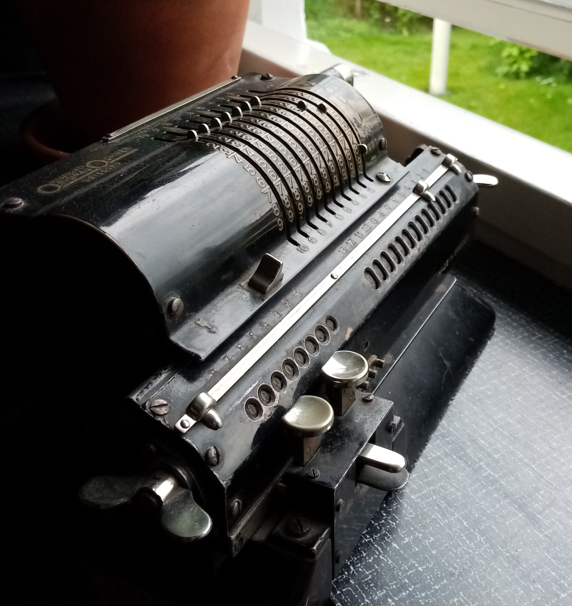

Räknesnurra
En sk. räknesnurra tillverkad av firman Original-Odhner.
Skaffade den för att ha som övningsobjekt när jag ska lära mig att ta isär en sådan för att smörja upp och få den i full funktion.
Fel som denna har:

- Registret rör sig inte som det ska vilket gör multiplikation och division lite oberäkneligt. Smörjfilmen inuti den är för klibbig.
- Den är lite smutsig
- Lacken är fläckvis skada - men jag är inte intresserad av att få den i nyskick. Slitaget ska synas